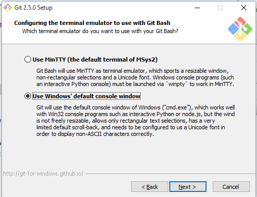
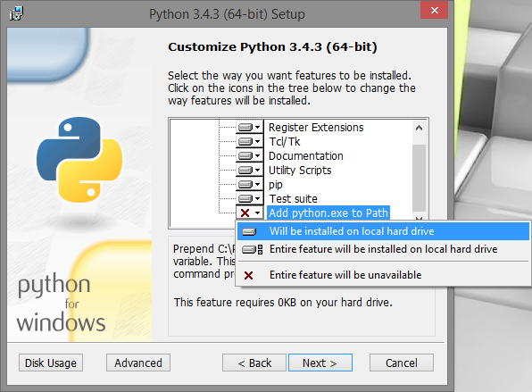
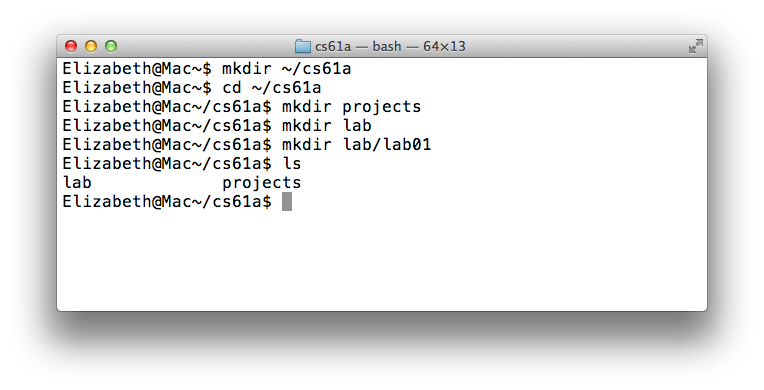
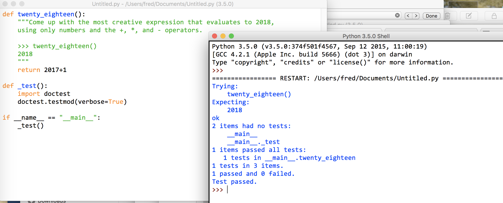

Lab 0: Setting up a productive Python workflow
Due at 11:59 on Friday.
Introduction
This lab explains how to use your own computer to complete assignments for CS 2021. If you are using a school computer, most of the instructions are the same, except you won't have to install anything. In each lab you will download a starting .py file, which provides starter code. You will submit just one labxx.py python module file to Blackboard.
Setting up
Installing a terminal
The terminal is a program that allows you to interact with your computer by entering commands. No matter what operating system you use (Windows, MacOS, Linux), the terminal will be an essential tool for CS 2021.
If you're on a Mac or are using a form of Linux (such as Ubuntu), you already have a program called
Terminalon your computer. Open that up and you should be good to go.
For Windows users, we recommend downloading a terminal called Git Bash.
You should be able to install Git Bash with most of the default configuration options, with one exception. In the Configuring the terminal emulator to use with Git Bash step, select the second option: Use Windows' default console window.

Installing Python 3
Python 3 is our primary programming language. You can get Python here. Download one of the installers (for example, "Windows x86-64 MSI installer" or "Mac OS X 64-bit installer"). If your computer is a 64-bit machine, you should download the 64-bit installer. (In general, if your computer is new within the past 2 years, it is likely 64-bit. Ask a TA or lab assistant if you're not sure.)
MacOS users can refer to this video for additional help on setting up Python.
If you're having trouble opening the installer, you can right-click the icon and select "Open".
For Windows users, if you're installing a more recent version of Python, you should make sure to specify during setup to 'Add python.exe to Path', which will allow you to execute thepythoncommand from your terminal.
You can also refer to this video for additional help on setting up Python (up to 1:09 into the video).
If you did not see the aforementioned option during setup, then you will need to manually configure your
PATHenvironment variable; the same video describes how to do this from 5:00 to 5:54.
Installing a text editor
The Python interpreter that you installed earlier allows you to run Python code. You will also need a text editor, which will help you write Python code.
A text editor is a program that allows you to edit text files, and often comes with tools to help you customize your experience. You will be using a text editor to create, modify, and save files.
There are many editors out there, each with its own set of features. We find that Sublime Text 2 and Atom are popular choices among students, but you are free to use other text editors.
Note: Please, please, please do not use Microsoft Word to edit programs. Word is designed to edit natural languages like English — trouble will ensue if you try to write Python with Word!
For your reference, we've also written some guides on using popular text editors. After you're done with lab, you can take a look if you're interested:
Open a terminal
First, open a terminal, if you haven't already.

Right now, I'm in my home directory. The home directory is represented
by the ~ symbol. When you first open your terminal, you will start in
the home directory.
Don't worry if your terminal window doesn't look exactly the same; the important part is that the text on the left-hand side of the
$has a~(tilde). That text might also have the name of your computer.
Organize your files
In this section, we will be learning terminal commands to manage our files.
Directories
The first command we'll use is ls. Try typing it in the terminal:
lsThe ls command lists all the files and folders in the current
directory. A directory is another name for a folder (such as the
Documents folder). Since we're in the home directory right now, you
should see the contents of your home directory.
Making new directories
Our next command is called mkdir, which makes new
directories. Let's make a directory called cs2021 to store all of
the assignments for this class:
mkdir cs2021A folder called cs2021 will appear in our home directory.
Changing directories
To move into another directory, we use the cd command. Try typing the
following command into your terminal:
cd cs2021The cd command will change directories — in other words, it
moves you into the specified folder. In the example above, we chose to
move into the cs2021 directory.
If we want to go back to our home directory, there are a few ways to do so:
- Type
cd ..(two dots). The..means "the parent directory". In this case, the parent directory ofcs2021happens to be our home directory, so we can usecd ..to go up one directory. - Type
cd ~(the tilde). Remember that~means home directory, so this command tells your terminal to change to the home directory, no matter where you currently are. - Type
cd(that is, thecdcommand with no arguments). Typing justcdis a shortcut for typingcd ~.
At this point, let's create some more directories. Make sure you are in
the ~/cs2021 directory, using the necessary cd commands. Then create
projects and labfolders inside of our cs2021 folder:
cd ~/cs2021
mkdir projects
mkdir labNow if we list the contents of the directory (using ls), we'll see two
folders, projects and lab.

Downloading the assignment
Next, download the starter code from the course github archive, lab00.py, which contains the
file that we'll need for this lab. Once you've done that, let's find our
downloaded file. On most computers, lab00.py is probably located in a
directory called Downloads in your home directory. Let's use the ls command
to check:
ls ~/DownloadsIf you don't see lab00.py, ask a TA or lab assistant for help.
Moving files
Let's move our starter file into our new lab directory. From the terminal, use the following command:
mv ~/Downloads/lab00.py ~/cs2021/labThe mv command will move the ~/Downloads/lab00.py file into the ~/cs2021/lab folder.
Now, go to the lab00 folder that we just moved. Try using cd to navigate
your own way! If you get stuck, you can use the following command:
cd ~/cs2021/lab/lab00We're ready to start editing a file. Don't worry if this seems complicated — it will get much easier over time. Just keep practicing! You can also take a look at our UNIX tutorial for a more detailed explanation of terminal commands.
Understand the question
Open up lab00.py in your text editor. You should see something like this:
def twenty_eighteen():
"""Come up with the most creative expression that evaluates to 2018,
using only numbers and the +, *, and - operators.
>>> twenty_eighteen()
2018
"""
return ______
return (1 + 2) * 2 * 2 * 2 * 2 * 2 * 3 * (3 + 4) + 2
The lines in the triple-quotes """ are called a docstring, which is a
description of what the function is supposed to do. When writing code in 2021,
you should always read the docstring!
The lines that begin with >>> called doctests. Doctests explain what the
function does by showing actual Python code: "if we input this Python code (the
lines that say >>>), what should the expected output be (the lines underneath
the >>>)?"
In twenty_seventeen,
- The docstring tells us to "come up with the most creative expression that
evaluates to 2017," but that we can only use numbers and arithmetic operators
+(add),*(multiply), and-(subtract). - The doctest for
twenty_seventeen()checks that no matter how we do our calculation,twenty_seventeenshould return the number 2017.
You should never change the doctests in your assignments! The only part of your assignments that you'll need to edit is the code.
Write code
Once you understand what the question is asking, you're ready to start writing
code! You should replace the underscores in return ______ with an expression that
evaluates to 2018. What's the most creative expression you can come up with?
Run tests
In CS2021, we will use a python module called doctest to test our code.
Now, let's test our code to make sure it works. There are two ways to do this. The most barebones way is to type the following.
python3 -m doctest -v lab00.pydoctest program is by adding the following code to the end of your program. This method can be used when using an IDE such as IDLE. More details about this will be discussed in class.
def _test():
import doctest
doctest.testmod(verbose=True)
if __name__ == "__main__":
_test()
Here is a screenshot of how doctests look in IDLE python IDE.

Lab Submission
After passing doctests you should submit your edited lab file lab00.py on Blackboard.